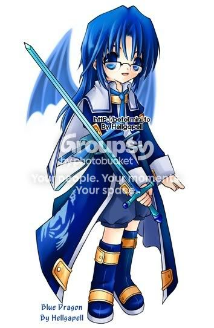
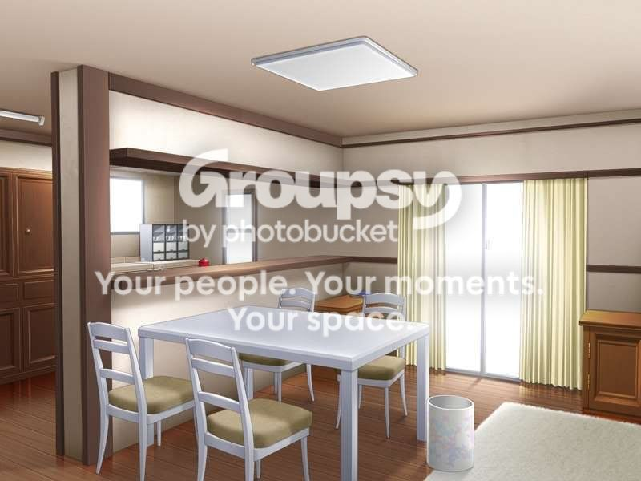
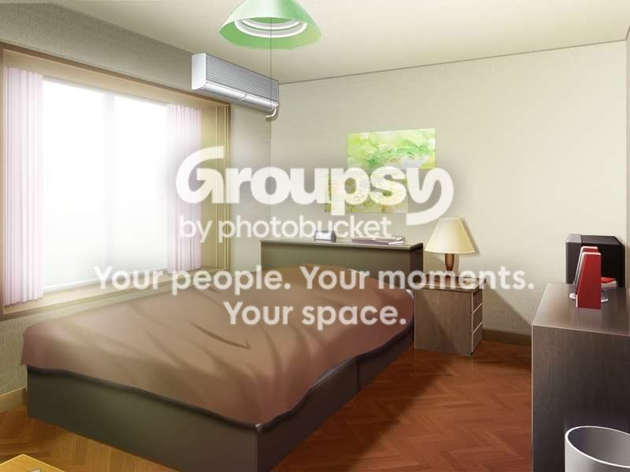
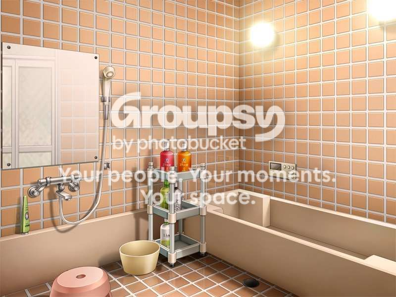

ตอนพิเศษ2

ผม วาคาโอะริ อิโนะ อายุ 27 ปี เป็นผอ.ของโรงเรียนเอกชนโมเอะ แห่งนี้ครับ ผมจะมาแนะนำหอพักของนักเรียนให้ทุกๆท่านเห็นว่าเป็นอย่างไร
เดินออกจากอาคารเรียน2มา... เลี้ยวซ้ายและเดินตรงไปข้างๆจะเป็นทางต่อไปย่านดาวน์ทาวน์ซึ่งผมจะเอาไว้ทีหลังนะครับ เมื่อตรงไปสุดทางเดินแล้วจะมีถังขยะอยู่ ให้ท่านเอามือไปแตะๆที่ถังครับแล้วถังขยะก็จะพาท่านไปสู่หอพักเองอัตโนมัติ
คริคริ เจ๋งใช่ม้า ~ ผมเป็นคนประดิษฐ์ขึ้นมาเองเลยนะเนี่ย ! (ขอเปลี่ยนจากถังขยะเป็นอย่างอื่นได้มั้ย – เสียงของผู้หวังดี เพราะอาจมีคนดักตีหัวผอ.ก็เป็นได้)
เมื่อท่านถูกส่งเข้ามาแล้ว ท่านก็จะอยู่ในสถานที่ที่เรียกว่า ‘โอเอ็มจี ดอม’ (ดูมันตั้งชื่อเข้า - -) ท่านก็จได้เห็นตึกอยู่ 2 ตึก ซึ่งก็คือหอพักชาย – หญิงนั่นเอง
ภายในห้องพักของนักเรียนก็จะเห็น....

โต๊ะจิปาถะ (?) และห้องครัว ที่ผอ.สั่งให้เลขาไปทำมาโดยเฉพาะ อุบะแฮ่ม –w- *ยิ้มด้วยความภูมิใจ*

เตียงนอนอันเลิศหรู ที่นักเรียนสามารถปรับเปลี่ยนได้ตามใจชอบ

และห้องน้ำที่มีเครื่องดับกลิ่นอันไฮเทคติดตั้งอยู่ สามารถเปลี่ยนกลิ่นได้ตามให้ชอบ
ภายในห้องพักนี้ จะมีเตียงนอนเป็นเตียงคู่ จะให้คนพักมากสุดได้แค่2คน (แต่นักเรียนส่วนใหญ่พักกันคนเดียว) แต่จะสามารถให้มาจัดงานฉลองกันได้มากสุด 8 คนและไม่ว่าห้องจะเล็กสักแค่ไหนผมก็จะตามไปเลี้ยงด้วยทุกห้อง 555+

และข้างบนนี้คือภาพตัวอย่างที่ผมไปแอบถ่ายมา
ในการจัดงานทางเราจะไม่อนุญาตให้นักเรียนเอาเครื่องดื่มแอลกอฮอล์ (ยกเว้นไวน์นะจ๊ะ) มาดื่มด้วย ยกเว้นแต่ว่าจะเป็นงานปีใหม่เท่านั้น
เมื่อผมกล่าวมาถึงตรงนี้แล้วก่อนจะขึ้นเรื่องใหม่ผมก็ขอบอกว่า ‘นักเรียนทุกคนที่พักในหอพักนั้นควรจะมีอาวุธพกติดตัวไว้ด้วย’ ผมเตือนด้วยความหวังดีนะครับ *ยิ้มหวาน*
เอาล่ะจบเรื่องหอพักไปสักกะที เฮ้อ ~ *ปาดเหงื่อ* ต่อไปนี้ผมจะแนะนำเรื่องสถานที่ในโรงเรียนนะงับส์ >w< *ทำปากแมว* โดยเรื่องนี้เป็นเพียงพวกอย่างสระว่ายน้ำ ห้องเรียนเลยจะนำมาเป็นเรื่องที่2นะครับ (เกี่ยวมั้ยนั้น?)
1. ตึกเรียนจะมีหน้าตาแบบรูปล่างนี้ นะครับ โดยชั้นล่างสุดของตึกจะเป็นห้องพักครู

2.ห้องเรียน ห้องเรียนนี้นักเรียนที่น่ารักจะมารวมกันอยู่และตั้งใจเรียนหนังสือ *หลับตาพริ้ม* อาจารย์ก็จะสอนด้วยความตั้งใจ (เฮ้ยๆ นั้นมันความฝัน - นักเรียน)

3.ระเบียงทางเดิน .... จะให้อธิบายอะไรอีกเล่า ชิชิชิ

4.ห้องพยาบาล ที่นี่จะมีอาจารย์พยาบาลประจำอยู่ คอยรักษาบาดแผลและอาการป่วยต่างๆของนักเรียกให้ อ้อลืมบอกไปอาจารย์พยาบาลก็เป็นอาจารย์แนะแนวนะครับ *ยิ้ม*

5.ห้องคอมพิวเตอร์ ถ้านักเรียนต้องการทำงาน หรือ เล่นเกมหาความบันเทิงในเวลาพักที่สั้นๆล่ะก็ ห้องคอมพิวเตอร์นี้พร้อมที่จะให้นักเรียนมาใช้บริการเสมอ *เหล่มองนางแบบ* นักเรียนห้องไหนล่ะเนี่ย *ดันแว่น*

6.สระว่ายน้ำ เป็นที่สำหรับชมรมว่ายน้ำ แต่ว่าคนนอกชมรมก็สามารถใช้ได้นะครับ แต่ว่าผม...ว่ายไม่เป็นนะ แหะๆ

7.โรงอาหาร แหมๆยังไงซะกองทัพก็ต้องเดินด้วยท้องนะครับ อิอิ ที่แห่งนี้จะมาเสริมพลังให้เราได้ทุกๆเวลา อ๊ะ คนในภาพเป็นคนเสริฟอาหาร ของร้านเค้กในโรงอาหารนะครับ *ยิ้ม*

8.ดาดฟ้า และ หึหึหึ ฮะฮะฮะ วะฮ่าฮ่าฮ่า (บ้าไปแล้ว) ที่นี่เป็นสถานที่ๆนักเรียนทุกคนจะมาทานอาหาร แทนที่โรงอาหารเพื่อความเป็นส่วนตัว หรืออยากจัดกันแค่เพื่อนๆในกลุ่ม และ จัดกิจกรรมร่วมกันครับ ปกติผมก็มาอยู่ที่นี่นะครับ (มันมาแย่งอาหารพวกเรากิน - นักเรียน)

แฮ่กๆ *หอบ* หลังจากที่ผมแนะนำไป2เรื่องแล้วก็ขอจบ ตอนพิเศษที่2ไปก่อนนะครับ แล้วผมกับผมได้อีก ในตอนพิเศษที่3นะคร้าบ – บบ ครั้งหน้าผมจะมาแนะนำการเรียนหลักที่แยกเป็น 3 สายพลังให้ฟังนะครับ *ยิ้มแป้น*
-----------------------------------------------------------
งืมม... ชักชอบแต่งตอนพิเศษ อิอิ อย่างที่ทั่น ผอ. เค้าบอกมานะเมี้ยว โรงเรียนนี้วิชาหลักคือการต่อสู้ และ จะแบ่งเป็น3แบบนะเมี้ยว >w<